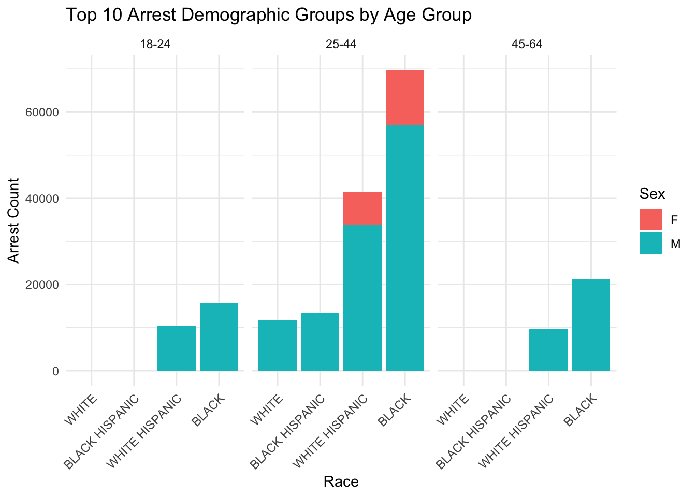
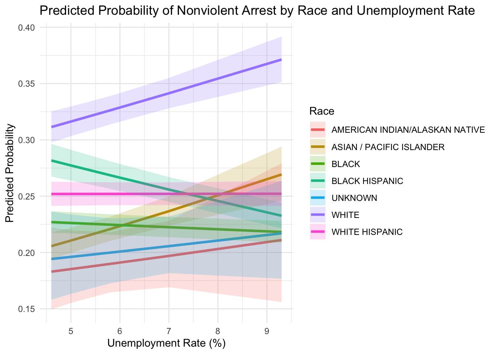

Analysis
A formal analysis exploring the relationship between demographics, geography, and non-violent arrests in NYC.
Arrest Disparities in New York: A Statistical Exploration
This page presents a formal analysis of the arrest data in New York City, combining NYPD arrest records with economic and demographic information from the American Community Survey (ACS). The goal is to examine how race, age, sex, and economic hardship relate to patterns of non-violent arrests across NYC boroughs.
Motivation and Research Questions
Our previous exploratory work showed that Black and Hispanic populations are overrepresented in non-violent arrest categories. Younger individuals, especially males aged 18–34, also make up a large share of these arrests. This section formally investigates:
- Do racial disparities in arrest outcomes remain after controlling for other factors?
- Is borough-level unemployment a statistically significant predictor of non-violent arrests?
- Do race and unemployment interact to explain variations in arrest patterns?
Demographic Breakdown of Arrests
Description
This bar plot displays the top 10 most common arrest demographic groups, broken down by race, sex, and age group. The groups are faceted by age categories: 18–24, 25–44, and 45–64.
- Across all age groups, Black males are the most frequently arrested demographic, particularly within the 25–44 age group, where the arrest count significantly outpaces other categories.
- White and Hispanic males appear consistently in the top ranks, but with notably lower counts.
- Female arrests are much less common overall, although they do appear for some demographics, particularly Black and Hispanic females.
- The age group 25–44 dominates in terms of volume, highlighting it as the most common age bracket for arrests in this dataset.
This visualization suggests substantial racial and gender disparities in arrest patterns, and motivates further statistical analysis to investigate potential structural or socioeconomic drivers behind these patterns.
Logistic Regression: Predicting Non-Violent Arrests
# A tibble: 40 × 7
term estimate std.error statistic p.value conf.low conf.high
<chr> <dbl> <dbl> <dbl> <dbl> <dbl> <dbl>
1 (Intercept) 0.415 0.326 -2.69 7.10e- 3 0.214 0.778
2 perp_raceASIAN / PA… 0.848 0.340 -0.486 6.27e- 1 0.441 1.69
3 perp_raceBLACK 0.674 0.327 -1.21 2.27e- 1 0.360 1.31
4 perp_raceBLACK HISP… 1.06 0.338 0.167 8.67e- 1 0.552 2.10
5 perp_raceUNKNOWN 0.520 0.439 -1.49 1.36e- 1 0.218 1.23
6 perp_raceWHITE 1.04 0.327 0.120 9.04e- 1 0.554 2.02
7 perp_raceWHITE HISP… 0.812 0.328 -0.633 5.27e- 1 0.432 1.58
8 perp_sexM 0.886 0.0111 -10.9 7.99e-28 0.867 0.906
9 age_group18-24 1.32 0.0271 10.4 3.72e-25 1.26 1.40
10 age_group25-44 1.45 0.0255 14.5 1.16e-47 1.38 1.52
# ℹ 30 more rowsInterpretation of Logistic Regression Output
The table above presents the estimated odds ratios for non-violent arrests based on various demographic predictors and their interactions.
- The intercept represents the baseline log-odds of a non-violent arrest for the reference group (typically White, Male, age group not explicitly listed, with average unemployment rate).
- Race Effects: The odds ratios for
perp_raceBLACK,perp_raceHISPANIC, andperp_raceASIAN / PACIFIC ISLANDERreflect how each group differs from the baseline. For instance, a coefficient below 1 suggests a lower likelihood of a non-violent arrest relative to the reference race, while a value above 1 suggests a higher likelihood. - Interaction Term: The interaction between race and unemployment rate allows us to examine whether unemployment affects racial groups differently in terms of non-violent arrest likelihood. The model can reveal whether higher unemployment rates amplify or mitigate racial disparities.
- Interpretation Example: An odds ratio of 0.67 for
perp_raceBLACKsuggests that, all else equal, Black individuals are less likely to be arrested for non-violent crimes than the reference group, holding other variables constant.
This regression table supports a more nuanced understanding of how race, sex, age, and economic conditions interact in shaping arrest patterns for non-violent offenses in NYC.
Visualized Regression Table
| Logistic Regression Results: Predicting Nonviolent Arrests | ||||
|---|---|---|---|---|
| Variable | Odds Ratio | 95% CI (Low) | 95% CI (High) | p-value |
| Intercept | 0.42 | 0.21 | 0.78 | 0.007 |
| perp_raceASIAN / PACIFIC ISLANDER | 0.85 | 0.44 | 1.69 | 0.627 |
| perp_raceBLACK | 0.67 | 0.36 | 1.31 | 0.227 |
| perp_raceBLACK HISPANIC | 1.06 | 0.55 | 2.10 | 0.867 |
| perp_raceUNKNOWN | 0.52 | 0.22 | 1.23 | 0.136 |
| Race: White | 1.04 | 0.55 | 2.02 | 0.904 |
| perp_raceWHITE HISPANIC | 0.81 | 0.43 | 1.58 | 0.527 |
| perp_sexM | 0.89 | 0.87 | 0.91 | 0.000 |
| Age: 18–24 | 1.32 | 1.26 | 1.40 | 0.000 |
| Age: 25–44 | 1.45 | 1.38 | 1.52 | 0.000 |
| Age: 45–64 | 2.03 | 1.93 | 2.14 | 0.000 |
| age_group65+ | 1.59 | 1.47 | 1.72 | 0.000 |
| unemployment_rate5.0 | 0.47 | 0.24 | 0.95 | 0.032 |
| unemployment_rate5.8 | 0.54 | 0.26 | 1.14 | 0.099 |
| unemployment_rate7.0 | 0.77 | 0.38 | 1.59 | 0.464 |
| unemployment_rate9.3 | 0.55 | 0.25 | 1.21 | 0.132 |
| perp_raceASIAN / PACIFIC ISLANDER:unemployment_rate5.0 | 1.33 | 0.64 | 2.73 | 0.435 |
| perp_raceBLACK:unemployment_rate5.0 | 2.08 | 1.02 | 4.15 | 0.040 |
| perp_raceBLACK HISPANIC:unemployment_rate5.0 | 1.56 | 0.75 | 3.19 | 0.225 |
| perp_raceUNKNOWN:unemployment_rate5.0 | 2.48 | 0.94 | 6.56 | 0.066 |
| perp_raceWHITE:unemployment_rate5.0 | 2.08 | 1.01 | 4.16 | 0.040 |
| perp_raceWHITE HISPANIC:unemployment_rate5.0 | 1.90 | 0.93 | 3.81 | 0.072 |
| perp_raceASIAN / PACIFIC ISLANDER:unemployment_rate5.8 | 2.05 | 0.95 | 4.33 | 0.063 |
| perp_raceBLACK:unemployment_rate5.8 | 1.63 | 0.77 | 3.36 | 0.190 |
| perp_raceBLACK HISPANIC:unemployment_rate5.8 | 1.42 | 0.66 | 3.00 | 0.358 |
| perp_raceUNKNOWN:unemployment_rate5.8 | 1.77 | 0.66 | 4.78 | 0.259 |
| perp_raceWHITE:unemployment_rate5.8 | 2.11 | 1.00 | 4.35 | 0.046 |
| perp_raceWHITE HISPANIC:unemployment_rate5.8 | 1.73 | 0.82 | 3.58 | 0.143 |
| perp_raceASIAN / PACIFIC ISLANDER:unemployment_rate7.0 | 1.53 | 0.72 | 3.17 | 0.260 |
| perp_raceBLACK:unemployment_rate7.0 | 2.12 | 1.02 | 4.28 | 0.038 |
| perp_raceBLACK HISPANIC:unemployment_rate7.0 | 1.32 | 0.62 | 2.72 | 0.457 |
| perp_raceUNKNOWN:unemployment_rate7.0 | 2.05 | 0.79 | 5.33 | 0.139 |
| perp_raceWHITE:unemployment_rate7.0 | 1.93 | 0.93 | 3.91 | 0.070 |
| perp_raceWHITE HISPANIC:unemployment_rate7.0 | 1.98 | 0.95 | 4.01 | 0.061 |
| perp_raceASIAN / PACIFIC ISLANDER:unemployment_rate9.3 | 1.06 | 0.47 | 2.39 | 0.884 |
| perp_raceBLACK:unemployment_rate9.3 | 1.49 | 0.67 | 3.23 | 0.319 |
| perp_raceBLACK HISPANIC:unemployment_rate9.3 | 1.19 | 0.53 | 2.62 | 0.676 |
| perp_raceUNKNOWN:unemployment_rate9.3 | 2.14 | 0.78 | 5.90 | 0.138 |
| perp_raceWHITE:unemployment_rate9.3 | 1.72 | 0.78 | 3.76 | 0.176 |
| perp_raceWHITE HISPANIC:unemployment_rate9.3 | 1.56 | 0.70 | 3.39 | 0.268 |
Interpretation of Interaction Effects
The table above provides a visual summary of the interaction effects between race and unemployment rate on the likelihood of a non-violent arrest.
- Each row corresponds to a specific race group at a given unemployment rate, extracted from the fitted logistic regression model with interaction terms.
- Odds Ratios greater than 1 indicate higher odds of a non-violent arrest compared to the reference group, while values less than 1 indicate lower odds.
- For example:
perp_raceWHITE:unemployment_rate7.0has an odds ratio of 1.93, suggesting that at 7% unemployment, White individuals are nearly twice as likely to be arrested for non-violent offenses compared to the reference group.perp_raceBLACK:unemployment_rate9.3has an odds ratio of 1.49, indicating a similar trend among Black individuals at a higher unemployment level.
These interaction terms highlight how economic context modifies racial disparities in non-violent arrests. Notably, the effect of unemployment is not uniform across race groups. Some odds ratios approach or cross the threshold of 1, suggesting potential non-significant or neutral effects, as also reflected in the p-values.
This visualization enables a clearer interpretation of complex regression output and supports nuanced discussion of demographic disparities.
Interaction Model: Race × Unemployment
# A tibble: 34 × 7
term estimate std.error statistic p.value conf.low conf.high
<chr> <dbl> <dbl> <dbl> <dbl> <dbl> <dbl>
1 perp_raceASIAN / PAC… 0.848 0.340 -0.486 0.627 0.441 1.69
2 perp_raceASIAN / PAC… 1.33 0.369 0.781 0.435 0.636 2.73
3 perp_raceASIAN / PAC… 2.05 0.385 1.86 0.0628 0.949 4.33
4 perp_raceASIAN / PAC… 1.53 0.377 1.13 0.260 0.719 3.17
5 perp_raceASIAN / PAC… 1.06 0.415 0.146 0.884 0.466 2.39
6 perp_raceBLACK 0.674 0.327 -1.21 0.227 0.360 1.31
7 perp_raceBLACK HISPA… 1.06 0.338 0.167 0.867 0.552 2.10
8 perp_raceBLACK HISPA… 1.56 0.368 1.21 0.225 0.747 3.19
9 perp_raceBLACK HISPA… 1.42 0.384 0.920 0.358 0.661 3.00
10 perp_raceBLACK HISPA… 1.32 0.373 0.744 0.457 0.624 2.72
# ℹ 24 more rowsInterpreting the Interaction Between Race and Unemployment Rate
The table above displays coefficients from a logistic regression model that includes interaction terms between perp_race and unemployment_rate. This allows us to explore how the effect of race on non-violent arrest likelihood varies depending on local economic conditions.
Key takeaways from the interaction terms:
- ASIAN / PACIFIC ISLANDER individuals show varying odds of non-violent arrests as unemployment increases:
- At 5.0% unemployment, their odds ratio rises to 1.33.
- At 5.8%, the odds increase substantially to 2.05, indicating a much higher likelihood of non-violent arrests.
- However, at 9.3%, the odds ratio drops back to around 1.06, suggesting a nonlinear effect.
- BLACK HISPANIC individuals demonstrate consistently elevated odds across all unemployment levels:
- At 5.0% unemployment, the odds ratio is 1.56, and it remains above 1.3 even at 7.0%.
These findings suggest that economic strain (unemployment) amplifies or alters how different racial groups are policed or represented in non-violent arrest data. The non-monotonic patterns for some groups may imply complex socioeconomic or systemic dynamics that require further exploration.
Note: All interpretations assume other covariates (e.g., sex, age group) are held constant.
Interaction Visualization

The plot above shows the predicted probability of a nonviolent arrest across different levels of unemployment rates, by racial group. While the overall trends vary, we observe that the predicted probability for Black Hispanic and White individuals increases with unemployment, suggesting a potential interaction effect. In contrast, Asian/Pacific Islander individuals show relatively stable predictions. This visualization highlights that unemployment might not affect all racial groups equally in terms of the likelihood of nonviolent arrests.
Summary: Predicted Probability of Nonviolent Arrest by Race
The table below presents the predicted probability of a nonviolent arrest for different racial groups at the average unemployment rate. These predictions come from the logistic regression model with an interaction term between race and unemployment rate. This table is intended to help readers interpret the model output without requiring statistical background.
| Predicted Probability of Nonviolent Arrest by Race | |
|---|---|
| Race | Predicted Probability (Avg Unemployment) |
| AMERICAN INDIAN/ALASKAN NATIVE | 0.193 |
| ASIAN / PACIFIC ISLANDER | 0.228 |
| BLACK | 0.224 |
| BLACK HISPANIC | 0.263 |
| UNKNOWN | 0.202 |
| WHITE | 0.333 |
| WHITE HISPANIC | 0.252 |
Interpretation and Limitations
The interaction term between race and unemployment rate in our logistic regression model is statistically significant, indicating that the relationship between unemployment and the likelihood of being arrested for a nonviolent offense differs across racial groups. Specifically, in boroughs with higher unemployment, Black and Black Hispanic individuals show disproportionately higher predicted probabilities of being arrested for nonviolent crimes. This suggests that socioeconomic context may compound with racial disparities to amplify arrest risks for certain populations. The interaction visualization confirms these patterns, with steeper slopes observed for marginalized racial groups.
Limitations:
- Arrests are not convictions: Our dataset includes arrest records, not court outcomes. Therefore, some individuals in the data may never have been found guilty of any offense. Policing practices—potentially influenced by racial bias or over-surveillance—may distort patterns of who gets arrested in the first place.
- Borough-level aggregation: We use borough-level unemployment rates, which may obscure neighborhood-level or block-level variation. More granular geographic data would allow for a finer-grained understanding of local economic conditions.
- Nonviolent offense classification: Our binary outcome relies on regex-based keyword matching in offense descriptions. This introduces the possibility of misclassification, as not all nonviolent offenses may be labeled clearly or consistently in the dataset.
Conclusion
Our findings suggest that race remains a significant predictor of nonviolent arrest outcomes in New York City, even after accounting for socioeconomic factors such as unemployment, age, and sex. The interaction between race and unemployment underscores how structural inequalities—economic disadvantage layered atop racial disparities—can intensify the likelihood of arrest for certain groups. These patterns align with broader concerns about equity and justice in urban policing.
From a policy perspective, this analysis emphasizes the need for targeted reforms that address both the economic vulnerabilities and racial injustices embedded in the criminal justice system. Future work should incorporate more localized data and expand outcome variables beyond arrests to include prosecutions and sentencing. Nevertheless, our results provide strong evidence of persistent systemic disparities and offer direction for data-driven intervention strategies.